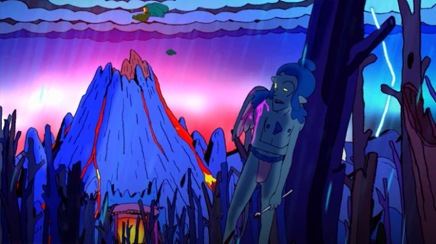

I sitll remember watching a screening of "Nova Seed," an indie feature mostly made by one man, in Toronto, with the director (Nick DiLiberto) present for a Q&A. Animated feature films made by a single person aren't entirely unheard of, but are rare, given how much work is involved. The man had quit his job to pursue it... I was amazed at his drive and originality, but knew he was doomed from the start, likely never to make back much profit from the film, and likely to give up quickly in dismay.But one of the only things more impressive than someone animating a feature-length film on their own, is for them to do it twice. I was shocked to discover "Empress of Darkness - The Curse of Graxus," his second feature film, released about four years after "Nova Seed." The director was committing to this venture, now with a genuine (albeit small) catalog of movies under his studio label. He was still selling DVDs of this and his previous feature on Amazon, including special-edition 2-disc versions, plus separate artbooks and other studio-branded merchandise featuring his singular art style. Well done man. ... but you can only get so much from such a low budget film and a single artist, and "Empress of Darkness" is markedly worse than "Nova Seed." We'll get to that in a moment.Set in some fantasy world, the sun has gone out, leaving the kingdom in only darkness. The Empress of Light (yes, "Light," which plays into a title reveal at the very end) was slain and laid on top a tomb, a la Snow White, sword still in her chest. The winged creatures that serve her (there are no humans in this movie, only a variety of monster races) are captured by a different monster race, one by one sacrificed into a fire, their blood harvested and drunk in some mysterious ritual. By chance, the movie's hero manages to escape, and sets off to the Empress: if he can simply remove the sword, she'll revive, and the sun will return. Attempting the journey while injured, he's pursued by the Captain of the race that originally captured him. He's also not allowed to kill anyone, or use the sword, or else the curse won't be lifted from the Empress (an interesting element that's ultimately forgotten in the end without consequence). One comparison that came to mind was "Nova Seed" being "Raiders of the Lost Ark," and "Empress of Darkness" being "Temple of Doom." In "Nova Seed," we had a memorable hero, chained as a slave, escaping to save the world while being pursued by multiple parties with their own agendas. "Empress" revels in its violence and gore, and puts less emphasis on the story, purposely leaving things vague about "who," "why" or "how." With experimental monster creatures of wild designs, the adventure is like a rock-and-roll album come alive, a mix of "Adventure Time" designs, and the philosophy of Ralph Bakshi films like "Fire and Ice," "The Lord of the Rings," and "Wizards."  But that decision to completely forgo story and world-building, when this world and adventure could have been worthy of a full-length novel, is frustrating. I never particularly cared about the hero, a winged imp in a wedgie of a loincloth. I didn't understand if his enemies wanted the sun to stay gone, or if they thought they were reviving it by killing off his race. I didn't understand a lot of things. Admittedly, I almost dozed off a bit during the short 68-minutes, but that's another issue: it feels like it drags on, and isn't as fun or exciting as it should be (I might need to rewatch the movie to see if I missed something that explains the gaps in the story).The musical score is a repetitive, generic synth-based rhythm (it feels like 5-minutes-worth of music on repeat, and is quickly annoying), and like the previous movie, what little voice acting present is of purposely-low quality, as if recorded in someone's bedroom, acted out by a friend or a neighbor.All that's left are the visuals and animation. Nick's style could be described as "comic-illustrator that designs covers for those free underground rebellious indie newspapers you find at your local subway station or hipster theater venue." Designs are rounded, morphing inconsistently, with backgrounds that make it clear that a ruler was not used to make things a little cleaner. The animation has an odd timing to it, being surprisingly smooth, as if models were rotoscoped for the scenes, but were poorly acted out to begin with. It's definitely original and utterly unique: I hestiate to call it "good," but some of the creature designs are worth seeing. At this time, there is no Bluray of either "Empress of Darkness" or the studio's previous feature. The movies don't demand full-HD quality, but there's definitely some blocky color compression in this one. I think it's less of an issue with the resolution or format, but more due to not using a professional disc-production company. Even if Gorgon Pictures were to stop at this 2nd movie, I think its existence is a success, assuming that the creators were able to make some sort of financial living off it. I suspect there will be a cult following around director Nick DiLiberto and his artwork, if there isn't one already. But the awe I have is largely to his perseverance, and his wholly original and imaginative style: the movies themselves aren't all that great, and "Empress of Darkness" in particular is lacking. If you haven't seen it yet, watch "Nova Seed" instead.
- "Ani" More reviews can be found at : https://2danicritic.github.io/ Previous review: review_Eleanor's_Secret Next review: review_Erased